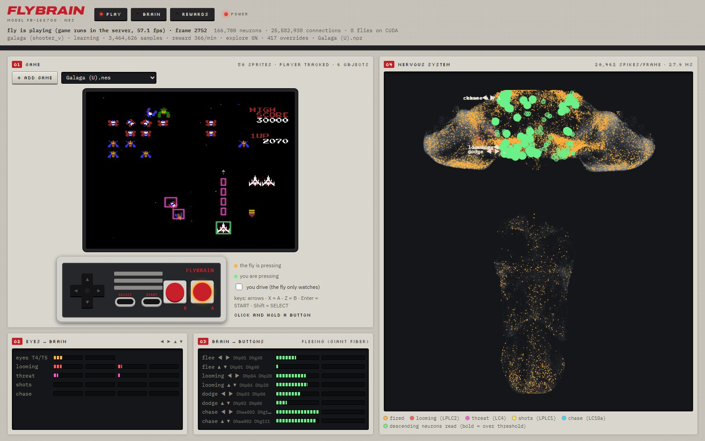
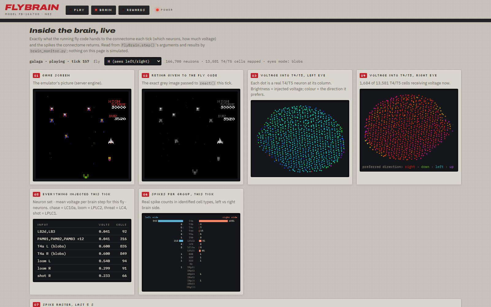
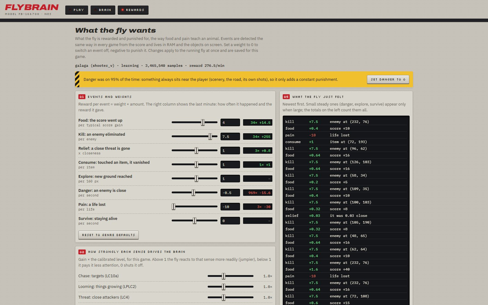
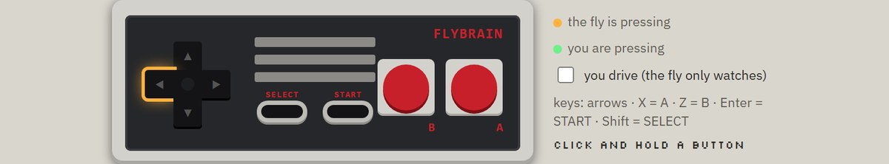
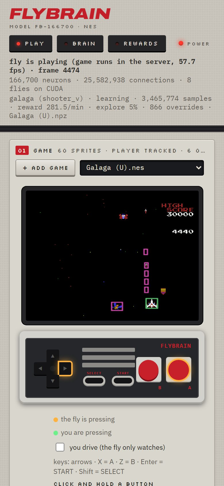

A real fruit fly brain plays NES games.
The whole nervous system of an adult fruit fly, 166,700 neurons wired from an electron-microscope map, runs live on one GPU. It sees the game through its motion and object detectors, its descending neurons press the buttons, and you can grab the controller and play along.
The 20-second launch video, recorded from the running app. A 2-minute walkthrough of rewards and senses is on the release page.
From the screen to the buttons
The brain itself is frozen: no training inside it. A small learner on top rewards what scores and punishes losing a life, the way food and pain teach an animal.
Watch it play, see inside, take the controller





On a phone, and more
Every page works on a phone. + Add game puts a ROM you own into the library from the page. Learning is saved per game and resumes next time. Unknown games get sensible controls and the fly works out which sprite it is.
Scramble the wiring and it stalls
What we found, honestly
- The wiring matters. The real connectome covered about 6× the ground of a degree-preserving scrambled copy.
- Learning helps, then plateaus. In Galaga the reward learner gives about 3× the score (p = 0.003).
- Not everything worked. A game-event reward feed and an n-step TD learner did not beat the simpler defaults; they are left in to experiment with.
- Best at action games. Shooters, platformers, maze and racing games. Sports, RPGs and puzzles are marked "not suited": the fly needs moving things to react to.
Run it, with games you own
Python 3.10+. An NVIDIA GPU runs 4 voting flies per axis at full speed; a CPU runs 1 (slower, still works). The brain (~260 MB) downloads itself on the first run.
git clone https://github.com/arpanguria68-ui/fly-plays-nes.git cd fly-plays-nes python -m venv .venv .venv/Scripts/pip install -r requirements.txt .venv/Scripts/pip install -r requirements-gpu.txt # NVIDIA GPU only # put games you own in roms/ (or use "+ Add game" on the page), then: .venv/Scripts/python mesen/connect.py # http://127.0.0.1:8777/
No games are included
This project does not include or link to any ROMs. Use cartridges you own, dumped with a cartridge dumper, or homebrew and public-domain games shared by their authors. Your games stay on your PC.